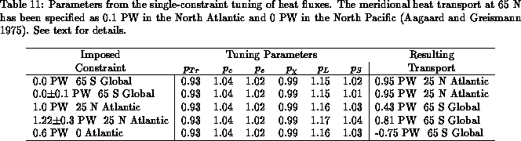

As an illustration of the technique, we apply the single constraint results of the previous section to fine tune the heat fluxes, independently of the fresh water fluxes. The consistent tuning of heat and fresh water fluxes will be discussed in section 9.4.
Non-dimensional parameters ,
,
,
,
, and,
are introduced in the bulk formulas
In the short wave parameterization (58), the tuning
parameter is roughly associated with the transmission
coefficient and water vapor absorption coefficient
(section 7.5), and
is related to the cloud cover
coefficient. In the long wave radiation formula (59),
is associated with the parameterized water vapor effect, and
with the tuning parameter for the cloud cover correction. In
the latent and sensible heat flux parameterizations, we have specified
a single tuning parameter for each formula (
and
),
representing primarily the uncertainties in the transfer
coefficients. To be consistent with the maximum likelihood principle
used to derive (55), one only needs to assume that
the tuning
parameter errors are normally distributed. We have made the
additional assumption that the parameter errors are also uncorrelated,
leading to a diagonal matrix
. Note, however, that
uncertainties in the sensible and latent heat fluxes can be associated
with errors in wind speed, and need not be
uncorrelated. At this time, however, we neglect this correlation.
Currently, all non-dimensional tuning parameters are set to 1
() and we seek small corrections
. In order to apply the results of the previous section we need
to specify error estimates
. As can be seen from
(55), the correction
is proportional to the
parameter error covariance matrix
. It has been our experience
that the results are extremely dependent on the particular choice of
. Unfortunately, it is very difficult to obtain reliable
estimates for the error variances of
. (Note that
correspond to the random part of the errors in
and should not
include bias.) Our approach, therefore, is to provide the necessary
fields to allow users of UWM/COADS to perform their own fine tuning of
the surface marine fluxes (see section 9.6).
For the sake of illustration, we present results with the error
estimates
This choice reflects the large scatter associated with the
turbulence measurements used to obtain the base value for the transfer
coefficients and
. Table 11 presents the result
of single constraint calculations. As northern boundary conditions we
specify a northward transport of 0.1 PW at 65° N in the North Atlantic,
and 0 PW at 65° N in the North Pacific (Aagaard and Greismann 1975). As
single-constraints in the southern boundary we specify:
a) no transport at the southern-most latitude
not covered by climatological ice; b) 1.22 PW at 25° N according to Hall
and Bryden (1982); and c) 0.6 PW at the equator in the Atlantic (Wunsch
1984). The last column in Table 11
gives the value of the constrained transport at
a reference latitude. Overall, the value of the adjusted tuning
parameter is fairly insensitive to the particular constraint imposed,
and the constrained net surface heat flux (not shown)
has a much higher degree of
balance than the unconstrained product in Fig. 8. The
main effect on the individual heat flux components is to decrease
the solar radiation and increase the heat loss due to
evaporation. These results are qualitatively similar to the adjustments
Oberhuber (1988) applied to his COADS based heat flux
estimates to achieve a global heat balance.
